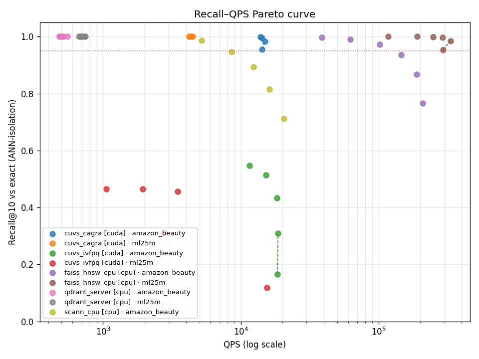
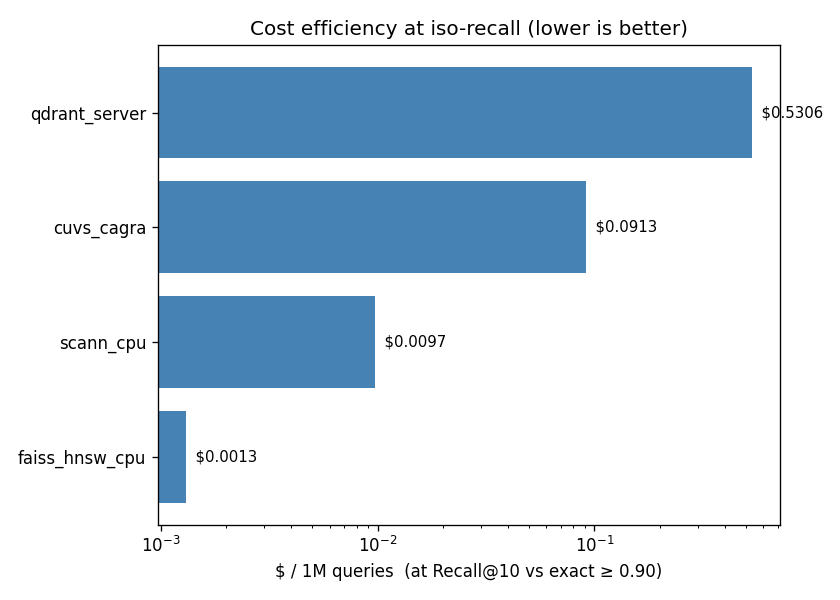
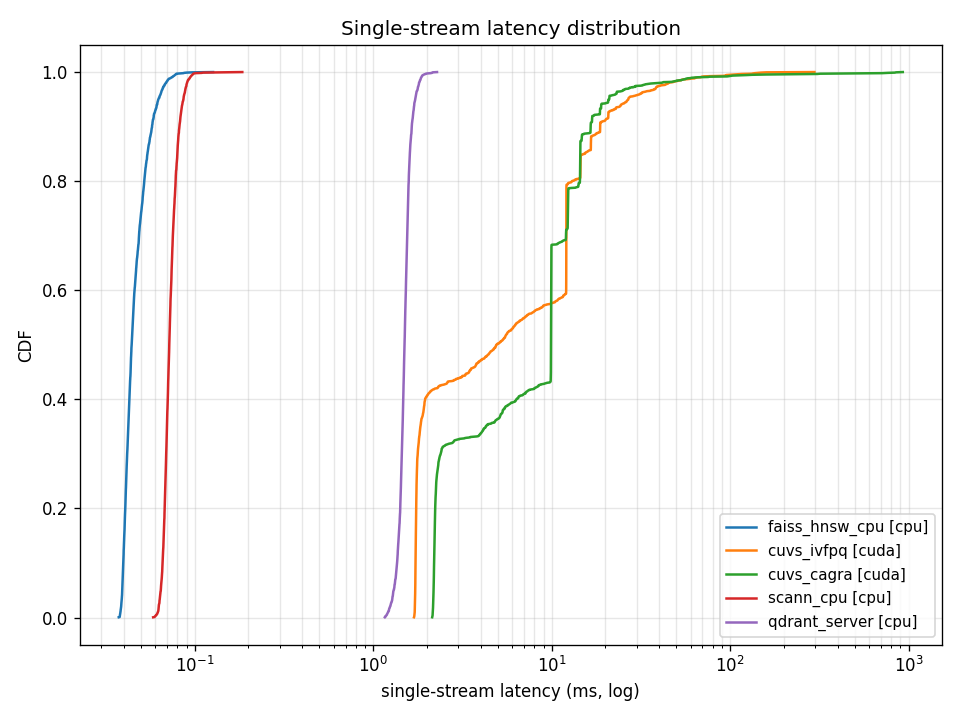
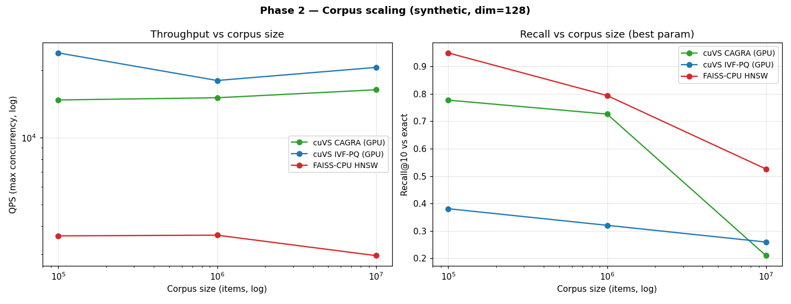
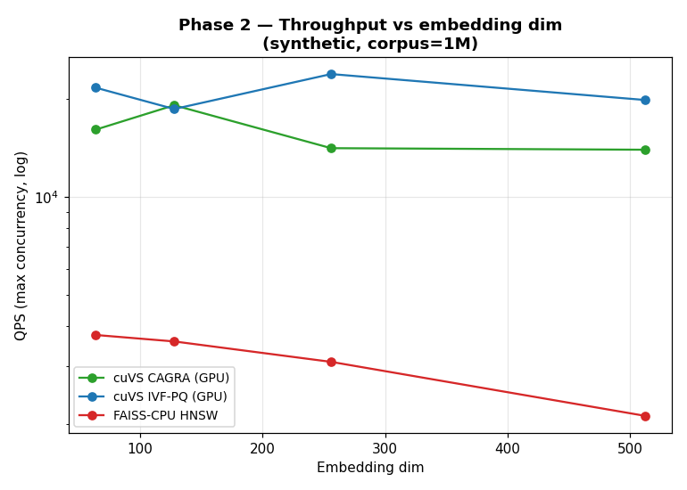

대상 청중: VDPU 개발자 · 벡터DB 개발자 · 추천 시스템을 잘 모르는 일반 사용자 한 줄 요약: "추천이 빨라지는 진짜 병목(ANN 벡터 검색)을 공정하게 재는 자(尺)를 만들었고, 그 자 위에서 GPU 가속이 언제 이기는지 데이터로 보였다. 그 다음 칸이 VDPU 다."
flowchart LR
A["1. 추천이란?<br/>(비유로 이해)"] --> B["2. 진짜 병목:<br/>벡터 검색(ANN)"]
B --> C["3. 왜 벤치마크가<br/>필요한가"]
C --> D["4. reco_bench<br/>설계"]
D --> E["5. 측정 결과<br/>(그래프)"]
E --> F["6. VDPU 의<br/>자리"]
F --> G["7. 청중별<br/>take-away"]
쿠팡에 접속하면 "당신을 위한 추천 상품"이 뜹니다. 수천만 개 상품 중에서 당신이 살 만한 10개를 0.1초 안에 골라야 합니다.
📚 비유: 1억 권의 책이 있는 도서관에서, 당신의 취향을 들은 사서가 "이 10권 어때요?" 를 눈 깜짝할 사이에 골라주는 것.
이걸 컴퓨터로 하는 표준 방법이 Two-tower(투-타워) 모델 입니다.
flowchart TB
subgraph U["사용자 탑 (User Tower)"]
U1["최근 본 상품<br/>클릭/구매 기록"] --> U2["신경망"] --> U3["사용자 벡터<br/>(숫자 128개)"]
end
subgraph I["상품 탑 (Item Tower)"]
I1["상품 제목<br/>카테고리/설명"] --> I2["신경망"] --> I3["상품 벡터<br/>(숫자 128개)"]
end
U3 --> M{"두 벡터가<br/>얼마나 가까운가?<br/>(유사도)"}
I3 --> M
M --> R["가장 가까운<br/>상품 top-10 추천"]
핵심 아이디어: 사용자와 상품을 각각 128개 숫자로 된 벡터(점) 로 바꾼다. 두 점이 가까우면 "취향이 맞다"는 뜻. 추천 = 내 점에서 가장 가까운 상품 점 10개 찾기.
🎯 일반 사용자용 한 줄: 추천은 결국 "고차원 공간에서 내 점과 가장 가까운 점들 찾기" 라는 기하학 문제 입니다.
상품이 1억 개면, 내 벡터와 1억 개 상품 벡터의 거리를 다 계산해서 가장 가까운 10개를 찾아야 합니다. 이게 추천 서비스에서 돈과 시간을 가장 많이 잡아먹는 단계 입니다.
flowchart LR
Q["사용자 벡터 1개"] --> S["⚡ 병목 ⚡<br/>1억 상품 벡터 중<br/>가장 가까운 10개 검색"]
S --> T["top-10 추천"]
style S fill:#ffd6d6,stroke:#d62728,stroke-width:3px
1억 개를 일일이 다 비교(brute-force)하면 정확하지만 너무 느리고 비쌉니다. 그래서 현실에선 ANN (Approximate Nearest Neighbor, 근사 최근접 이웃) 을 씁니다.
🔍 비유: 도서관에서 1억 권을 다 뒤지지 않고, 장르별 서가로 먼저 좁힌 뒤 그 안에서만 찾는 것. 약간의 누락(정확도↓)을 감수하고 100배 빠르게 찾는 기술.
| 방식 | 비유 | 속도 | 정확도 |
|---|---|---|---|
| Brute-force | 1억 권 전부 확인 | 매우 느림 | 100% |
| ANN | 관련 서가만 확인 | 수십~수백배 빠름 | 95%+ (조절 가능) |
ANN 을 빠르게 해주는 도구들이 시장에 많습니다: - 라이브러리: FAISS(Meta), ScaNN(Google), cuVS(NVIDIA) - 벡터 DB: Milvus, Qdrant, Weaviate, Pinecone … - 전용 하드웨어: 디노티시아 VDPU ← 우리가 증명하려는 것
기존 벤치마크들은 우리 질문에 답하지 못했습니다:
flowchart TB
A["기존 추천 벤치마크<br/>(MLPerf, RecBole)"] -->|"모델 품질만 측정<br/>검색 속도는 안 봄"| X["❌"]
B["기존 ANN 벤치마크<br/>(ann-benchmarks)"] -->|"합성/텍스트 벡터<br/>추천 워크로드 아님"| X
C["reco_bench<br/>(우리)"] -->|"실제 추천 모델 학습<br/>+ 그 벡터로 ANN 측정"| O["✅ 빈틈을 메움"]
style C fill:#d6f5d6,stroke:#2ca02c,stroke-width:2px
style O fill:#d6f5d6
reco_bench 는 실제 추천 모델을 학습 → 그 상품 벡터 위에서 ANN 을
측정 합니다. 그래서 숫자가 추천 현장을 대표합니다.참고한 공개 표준: ann-benchmarks(Recall-QPS 곡선), MLPerf DLRM (지연 측정), VectorDBBench(다중 DB 비교).
속도만 보면 속을 수 있습니다. 정확도를 희생하면 누구나 빨라지기 때문입니다. 그래서 같은 정확도(recall)에서 누가 더 빠른가 를 봅니다.
flowchart LR
A["❌ 나쁜 비교<br/>'A가 7배 빠름'<br/>(정확도 다름)"] --> B["😡 사기"]
C["✅ 공정한 비교<br/>'정확도 95% 에서<br/>A가 7배 빠름'"] --> D["😀 신뢰"]
style C fill:#d6f5d6,stroke:#2ca02c
| 지표 | 정답 기준 | 측정 대상 |
|---|---|---|
| Recall vs Ground Truth | 사용자가 실제로 산 상품 | 모델 + 검색 (전체 품질) |
| Recall vs Exact | brute-force 정답 | 순수 검색기 정확도 ← 가속기 비교 기준 |
💡 이렇게 분리하면 "검색기가 빠른 게 모델이 나빠서인가, 검색이 좋아서인가" 같은 혼동을 원천 차단합니다. 가속기 비교는 항상 vs exact 로 합니다.
flowchart TB
M["reco_bench 측정"] --> Q["품질<br/>Recall@10, NDCG"]
M --> S["속도<br/>QPS, P99 지연"]
M --> C["비용<br/>$/100만쿼리, 전력"]
M --> T["Trade-off<br/>Recall-QPS 곡선"]
flowchart LR
D["데이터<br/>다운로드"] --> Tr["Two-tower<br/>학습"] --> B["인덱스<br/>빌드"] --> E["평가"] --> R["자동 리포트<br/>+ 그래프"]
새 검색기(벡터 DB, 또는 VDPU)를 추가하려면 파일 1개 + 설정 1줄
이면 됩니다. 모든 검색기가 Retriever 라는 공통 인터페이스 뒤에 숨기
때문입니다.
# 모든 검색기(FAISS, Milvus, Qdrant, VDPU…)가 구현하는 공통 약속
class Retriever:
def build(item_vectors): ... # 인덱스 만들기
def search(query, k): ... # 가장 가까운 k개 찾기
데이터셋: MovieLens-25M(영화 2.4만), Amazon Reviews 2023(상품 16만), 그리고 synthetic(최대 1천만). 하드웨어: NVIDIA H100 GPU 1장 + CPU(EPYC, 128 thread 고정).

읽는 법: 오른쪽 위로 갈수록 좋다(빠르고 정확). 같은 높이(정확도)에서 오른쪽에 있는 점이 더 빠른 검색기.
| 검색기 | 종류 | 장치 | 속도(QPS) | 비용($/100만) |
|---|---|---|---|---|
| FAISS-CPU HNSW | 라이브러리 | CPU | 32,745 | $0.012 |
| FAISS-GPU IVF-PQ | 라이브러리 | GPU | 56,810 | $0.003 |
| cuVS CAGRA | 라이브러리 | GPU | 13,839 | $0.098 |
| ScaNN | 라이브러리 | CPU | 4,464 | $0.088 |
| Qdrant (벡터 DB 서버) | DB | CPU | 550 | $0.718 |
(Amazon Beauty, 16만 상품 기준. 전체 표는 baseline_results.md.)
🔑 벡터 DB(Qdrant)가 느린 이유: 엔진이 느린 게 아니라, 네트워크 왕복(질의를 서버에 보내고 받기) 비용 때문. 운영 편의성(분산·영속성)의 대가입니다. → 가속기 비교는 "같은 배포 형태끼리" 해야 공정.


읽는 법: 곡선이 왼쪽에 있을수록 빠르고 일관적. 추천 서비스는 평균이 아니라 P99(곡선의 99% 지점)로 품질을 약속합니다.

| 상품 수 | cuVS CAGRA (GPU) | FAISS-CPU HNSW (CPU) | 속도 격차 |
|---|---|---|---|
| 10만 | 14,744 QPS (recall 0.78) | 3,622 QPS (recall 0.95) | 4.1× |
| 100만 | 15,084 QPS (recall 0.73) | 3,647 QPS (recall 0.79) | 4.1× |
| 1천만 | 16,381 QPS (recall 0.21) | 2,952 QPS (recall 0.53) | 5.5× |
읽는 법 (두 축을 같이 봐야 함): - ✅ 속도(QPS): GPU 는 상품이 100배(10만→1천만) 늘어도 throughput 을 유지/상승, CPU 는 하락 → GPU 가 대규모에 robust. - ⚠️ 정확도(recall): 이 측정은 검색 파라미터를 고정했기 때문에 corpus 가 커지면 GPU·CPU 둘 다 recall 이 떨어집니다 (0.78→0.21). 즉 위 QPS 는 "같은 정확도(iso-recall)에서의 비교가 아닙니다."
🎯 정직한 결론: "GPU 가 대규모에서 throughput 을 유지한다"는 robustness 신호는 분명합니다. 다만 이 자료의 핵심 원칙인 iso-recall(같은 정확도) 비용비율의 직접 증거가 되려면, corpus 별로 recall 0.9 를 맞추는 param 으로 재측정이 필요합니다 (후속 과제,
07_scaling.md §5). 이 슬라이드에서는 "GPU 의 throughput robustness"까지만 주장하며, 과장하지 않습니다.작은 데이터에선 CPU 도 충분하지만 쿠팡 규모에선 GPU급 가속의 이점이 커지는 방향이라는 추세는 유효하고, VDPU 는 그 GPU 자리를 노립니다.

벡터 차원이 커질수록(LLM 임베딩 트렌드) CPU 의 속도·정확도가 함께 떨어지고, GPU 는 상대적으로 버팁니다.
지금까지는 CPU vs GPU 를 공정한 자(尺) 위에 올렸습니다. 그 자 위에 VDPU 한 줄을 추가 하는 것이 다음 단계(Phase 2)입니다.
flowchart TB
subgraph NOW["지금까지 (측정 완료)"]
CPU["CPU<br/>(FAISS/ScaNN/Qdrant)"]
GPU["GPU<br/>(cuVS/FAISS-GPU)"]
end
subgraph NEXT["VDPU 도착 후 (Phase 2)"]
V["VDPU<br/>전용 가속기"]
end
CPU -.같은 자로 비교.-> GPU
GPU -.같은 자로 비교.-> V
style V fill:#ffe9b3,stroke:#e8a33d,stroke-width:3px
iso-recall 비용비율 = (정확도 95%에서 GPU 의 $/쿼리) ÷ (정확도 95%에서 VDPU 의 $/쿼리)
이 값이 6~7× 이면 "GPU 대비 6~7배 가성비" 주장이 데이터로 증명됨.
VDPU 통합은 코드 1파일 + 설정 2줄이면 끝나도록 이미 설계돼 있습니다
(Retriever 인터페이스). 하드웨어가 도착하면 같은 그래프에 VDPU 곡선이
자동으로 겹쳐집니다.
flowchart LR
H["VDPU 하드웨어<br/>도착"] --> F["retrievers/vdpu.py<br/>1개 작성"] --> Y["기존 그래프에<br/>VDPU 곡선 자동 추가"] --> Z["iso-recall<br/>비용비율 산출"]
style Z fill:#ffe9b3,stroke:#e8a33d
Retriever 1개만 구현하면
CPU/GPU 와 같은 자로 측정됩니다.flowchart TB
P["추천 = 1억 상품 중<br/>가장 가까운 10개 찾기"] --> B["병목 = 벡터 검색(ANN)"]
B --> M["reco_bench:<br/>공정한 자(iso-recall)로<br/>CPU/GPU/벡터DB 측정"]
M --> K1["결과 1: 데이터 클수록<br/>GPU 우위 4→5.5배"]
M --> K2["결과 2: 고차원일수록<br/>GPU 유리"]
M --> K3["결과 3: 벡터DB는<br/>네트워크 비용 큼"]
K1 --> V["→ VDPU 는 그 GPU 자리를<br/>더 싸게 노린다 (Phase 2)"]
K2 --> V
K3 --> V
style V fill:#ffe9b3,stroke:#e8a33d,stroke-width:3px
baseline_results.md,
06_phase1_findings.md,
07_scaling.md01_metric_design.md,
03_baseline_methodology.md04_vdpu_value_proposition.md05_reproducibility.md — 한 명령으로
전체 재현 가능⚠️ 정직성 노트: 본 자료의 GPU/CPU 수치는 H100 1장 기준 측정값이며, Two-tower 모델은 sanity 수준(품질보다 검색기 비교가 목적)입니다. IVF-PQ 계열의 낮은 recall, 벡터 DB 의 batch 미사용 등 한계는 각 상세 문서에 명시돼 있습니다. VDPU 곡선은 하드웨어 도착 후 실측으로 채워집니다 (현재는 빈 자리).